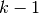
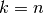
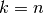
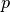
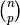
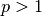
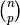
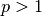

3.1. Cross-validation: evaluating estimator performance¶
Learning the parameters of a prediction function and testing it on the same data is a methodological mistake: a model that would just repeat the labels of the samples that it has just seen would have a perfect score but would fail to predict anything useful on yet-unseen data. This situation is called overfitting. To avoid it, it is common practice when performing a (supervised) machine learning experiment to hold out part of the available data as a test set X_test, y_test. Note that the word “experiment” is not intended to denote academic use only, because even in commercial settings machine learning usually starts out experimentally.
In scikit-learn a random split into training and test sets can be quickly computed with the train_test_split helper function. Let’s load the iris data set to fit a linear support vector machine on it:
>>> import numpy as np
>>> from sklearn import cross_validation
>>> from sklearn import datasets
>>> from sklearn import svm
>>> iris = datasets.load_iris()
>>> iris.data.shape, iris.target.shape
((150, 4), (150,))
We can now quickly sample a training set while holding out 40% of the data for testing (evaluating) our classifier:
>>> X_train, X_test, y_train, y_test = cross_validation.train_test_split(
... iris.data, iris.target, test_size=0.4, random_state=0)
>>> X_train.shape, y_train.shape
((90, 4), (90,))
>>> X_test.shape, y_test.shape
((60, 4), (60,))
>>> clf = svm.SVC(kernel='linear', C=1).fit(X_train, y_train)
>>> clf.score(X_test, y_test)
0.96...
When evaluating different settings (“hyperparameters”) for estimators, such as the C setting that must be manually set for an SVM, there is still a risk of overfitting on the test set because the parameters can be tweaked until the estimator performs optimally. This way, knowledge about the test set can “leak” into the model and evaluation metrics no longer report on generalization performance. To solve this problem, yet another part of the dataset can be held out as a so-called “validation set”: training proceeds on the training set, after which evaluation is done on the validation set, and when the experiment seems to be successful, final evaluation can be done on the test set.
However, by partitioning the available data into three sets, we drastically reduce the number of samples which can be used for learning the model, and the results can depend on a particular random choice for the pair of (train, validation) sets.
A solution to this problem is a procedure called cross-validation (CV for short). A test set should still be held out for final evaluation, but the validation set is no longer needed when doing CV. In the basic approach, called k-fold CV, the training set is split into k smaller sets (other approaches are described below, but generally follow the same principles). The following procedure is followed for each of the k “folds”:
- A model is trained using  of the folds as training data;
- the resulting model is validated on the remaining part of the data (i.e., it is used as a test set to compute a performance measure such as accuracy).
The performance measure reported by k-fold cross-validation is then the average of the values computed in the loop. This approach can be computationally expensive, but does not waste too much data (as it is the case when fixing an arbitrary test set), which is a major advantage in problem such as inverse inference where the number of samples is very small.
3.1.1. Computing cross-validated metrics¶
The simplest way to use cross-validation is to call the cross_val_score helper function on the estimator and the dataset.
The following example demonstrates how to estimate the accuracy of a linear kernel support vector machine on the iris dataset by splitting the data, fitting a model and computing the score 5 consecutive times (with different splits each time):
>>> clf = svm.SVC(kernel='linear', C=1)
>>> scores = cross_validation.cross_val_score(
... clf, iris.data, iris.target, cv=5)
...
>>> scores
array([ 0.96..., 1. ..., 0.96..., 0.96..., 1. ])
The mean score and the standard deviation of the score estimate are hence given by:
>>> print("Accuracy: %0.2f (+/- %0.2f)" % (scores.mean(), scores.std() * 2))
Accuracy: 0.98 (+/- 0.03)
By default, the score computed at each CV iteration is the score method of the estimator. It is possible to change this by using the scoring parameter:
>>> from sklearn import metrics
>>> scores = cross_validation.cross_val_score(clf, iris.data, iris.target,
... cv=5, scoring='f1')
>>> scores
array([ 0.96..., 1. ..., 0.96..., 0.96..., 1. ])
See The scoring parameter: defining model evaluation rules for details. In the case of the Iris dataset, the samples are balanced across target classes hence the accuracy and the F1-score are almost equal.
When the cv argument is an integer, cross_val_score uses the KFold or StratifiedKFold strategies by default (depending on the absence or presence of the target array).
It is also possible to use other cross validation strategies by passing a cross validation iterator instead, for instance:
>>> n_samples = iris.data.shape[0]
>>> cv = cross_validation.ShuffleSplit(n_samples, n_iter=3,
... test_size=0.3, random_state=0)
>>> cross_validation.cross_val_score(clf, iris.data, iris.target, cv=cv)
...
array([ 0.97..., 0.97..., 1. ])
The available cross validation iterators are introduced in the following.
3.1.2. Cross validation iterators¶
The following sections list utilities to generate indices that can be used to generate dataset splits according to different cross validation strategies.
3.1.2.1. K-fold¶
KFold divides all the samples in  groups of samples,
called folds (if , this is equivalent to the Leave One
Out strategy), of equal sizes (if possible). The prediction function is
learned using folds, and the fold left out is used for test.
groups of samples,
called folds (if , this is equivalent to the Leave One
Out strategy), of equal sizes (if possible). The prediction function is
learned using folds, and the fold left out is used for test.
Example of 2-fold cross-validation on a dataset with 4 samples:
>>> import numpy as np
>>> from sklearn.cross_validation import KFold
>>> kf = KFold(4, n_folds=2)
>>> for train, test in kf:
... print("%s %s" % (train, test))
[2 3] [0 1]
[0 1] [2 3]
Each fold is constituted by two arrays: the first one is related to the training set, and the second one to the test set. Thus, one can create the training/test sets using numpy indexing:
>>> X = np.array([[0., 0.], [1., 1.], [-1., -1.], [2., 2.]])
>>> y = np.array([0, 1, 0, 1])
>>> X_train, X_test, y_train, y_test = X[train], X[test], y[train], y[test]
3.1.2.2. Stratified k-fold¶
StratifiedKFold is a variation of k-fold which returns stratified folds: each set contains approximately the same percentage of samples of each target class as the complete set.
Example of stratified 2-fold cross-validation on a dataset with 10 samples from two slightly unbalanced classes:
>>> from sklearn.cross_validation import StratifiedKFold
>>> labels = [0, 0, 0, 0, 1, 1, 1, 1, 1, 1]
>>> skf = StratifiedKFold(labels, 3)
>>> for train, test in skf:
... print("%s %s" % (train, test))
[2 3 6 7 8 9] [0 1 4 5]
[0 1 3 4 5 8 9] [2 6 7]
[0 1 2 4 5 6 7] [3 8 9]
3.1.2.3. Leave-One-Out - LOO¶
LeaveOneOut (or LOO) is a simple cross-validation. Each learning set is created by taking all the samples except one, the test set being the sample left out. Thus, for n samples, we have n different learning sets and n different tests set. This cross-validation procedure does not waste much data as only one sample is removed from the learning set:
>>> from sklearn.cross_validation import LeaveOneOut
>>> loo = LeaveOneOut(4)
>>> for train, test in loo:
... print("%s %s" % (train, test))
[1 2 3] [0]
[0 2 3] [1]
[0 1 3] [2]
[0 1 2] [3]
Potential users of LOO for model selection should weigh a few known caveats. When compared with k-fold cross validation, one builds n models from n samples instead of k models, where n > k. Moreover, each is trained on n - 1 samples rather than (k-1)n / k. In both ways, assuming k is not too large and k < n, LOO is more computationally expensive than k-fold cross validation.
In terms of accuracy, LOO often results in high variance as an estimator for the test error. Intuitively, since n - 1 of the n samples are used to build each model, models constructed from folds are virtually identical to each other and to the model built from the entire training set.
However, if the learning curve is steep for the training size in question, then 5- or 10- fold cross validation can overestimate the generalization error.
As a general rule, most authors, and empirical evidence, suggest that 5- or 10- fold cross validation should be preferred to LOO.
References:
- http://www.faqs.org/faqs/ai-faq/neural-nets/part3/section-12.html
- T. Hastie, R. Tibshirani, J. Friedman, The Elements of Statistical Learning, Springer 2009
- L. Breiman, P. Spector Submodel selection and evaluation in regression: The X-random case, International Statistical Review 1992
- R. Kohavi, A Study of Cross-Validation and Bootstrap for Accuracy Estimation and Model Selection, Intl. Jnt. Conf. AI
- R. Bharat Rao, G. Fung, R. Rosales, On the Dangers of Cross-Validation. An Experimental Evaluation, SIAM 2008
- G. James, D. Witten, T. Hastie, R Tibshirani, An Introduction to Statitical Learning, Springer 2013
3.1.2.4. Leave-P-Out - LPO¶
LeavePOut is very similar to LeaveOneOut as it creates all
the possible training/test sets by removing  samples from the complete
set. For  samples, this produces  train-test
pairs. Unlike LeaveOneOut and KFold, the test sets will
overlap for .
samples, this produces  train-test
pairs. Unlike LeaveOneOut and KFold, the test sets will
overlap for .
Example of Leave-2-Out on a dataset with 4 samples:
>>> from sklearn.cross_validation import LeavePOut
>>> lpo = LeavePOut(4, p=2)
>>> for train, test in lpo:
... print("%s %s" % (train, test))
[2 3] [0 1]
[1 3] [0 2]
[1 2] [0 3]
[0 3] [1 2]
[0 2] [1 3]
[0 1] [2 3]
3.1.2.5. Leave-One-Label-Out - LOLO¶
LeaveOneLabelOut (LOLO) is a cross-validation scheme which holds out the samples according to a third-party provided array of integer labels. This label information can be used to encode arbitrary domain specific pre-defined cross-validation folds.
Each training set is thus constituted by all the samples except the ones related to a specific label.
For example, in the cases of multiple experiments, LOLO can be used to create a cross-validation based on the different experiments: we create a training set using the samples of all the experiments except one:
>>> from sklearn.cross_validation import LeaveOneLabelOut
>>> labels = [1, 1, 2, 2]
>>> lolo = LeaveOneLabelOut(labels)
>>> for train, test in lolo:
... print("%s %s" % (train, test))
[2 3] [0 1]
[0 1] [2 3]
Another common application is to use time information: for instance the labels could be the year of collection of the samples and thus allow for cross-validation against time-based splits.
Warning
Contrary to StratifiedKFold, the `labels` of :class:`LeaveOneLabelOut` should not encode the target class to predict: the goal of StratifiedKFold is to rebalance dataset classes across the train / test split to ensure that the train and test folds have approximately the same percentage of samples of each class while LeaveOneLabelOut will do the opposite by ensuring that the samples of the train and test fold will not share the same label value.
3.1.2.6. Leave-P-Label-Out¶
LeavePLabelOut is similar as Leave-One-Label-Out, but removes
samples related to  labels for each training/test set.
labels for each training/test set.
Example of Leave-2-Label Out:
>>> from sklearn.cross_validation import LeavePLabelOut
>>> labels = [1, 1, 2, 2, 3, 3]
>>> lplo = LeavePLabelOut(labels, p=2)
>>> for train, test in lplo:
... print("%s %s" % (train, test))
[4 5] [0 1 2 3]
[2 3] [0 1 4 5]
[0 1] [2 3 4 5]
3.1.2.7. Random permutations cross-validation a.k.a. Shuffle & Split¶
The ShuffleSplit iterator will generate a user defined number of independent train / test dataset splits. Samples are first shuffled and then split into a pair of train and test sets.
It is possible to control the randomness for reproducibility of the results by explicitly seeding the random_state pseudo random number generator.
Here is a usage example:
>>> ss = cross_validation.ShuffleSplit(5, n_iter=3, test_size=0.25,
... random_state=0)
>>> for train_index, test_index in ss:
... print("%s %s" % (train_index, test_index))
...
[1 3 4] [2 0]
[1 4 3] [0 2]
[4 0 2] [1 3]
ShuffleSplit is thus a good alternative to KFold cross validation that allows a finer control on the number of iterations and the proportion of samples in on each side of the train / test split.
3.1.2.8. See also¶
StratifiedShuffleSplit is a variation of ShuffleSplit, which returns stratified splits, i.e which creates splits by preserving the same percentage for each target class as in the complete set.
3.1.2.9. Bootstrapping cross-validation¶
Bootstrapping is a general statistics technique that iterates the computation of an estimator on a resampled dataset.
The Bootstrap iterator will generate a user defined number of independent train / test dataset splits. Samples are then drawn (with replacement) on each side of the split. It furthermore possible to control the size of the train and test subset to make their union smaller than the total dataset if it is very large.
Note
Contrary to other cross-validation strategies, bootstrapping will allow some samples to occur several times in each splits.
>>> bs = cross_validation.Bootstrap(9, n_iter=3, random_state=0)
>>> for train_index, test_index in bs:
... print("%s %s" % (train_index, test_index))
...
[1 8 7 7 8] [0 3 0 5]
[5 4 2 4 2] [6 7 1 0]
[4 7 0 1 1] [5 3 6 5]
3.1.3. Cross validation and model selection¶
Cross validation iterators can also be used to directly perform model selection using Grid Search for the optimal hyperparameters of the model. This is the topic if the next section: Grid Search: Searching for estimator parameters.